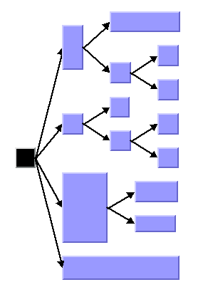
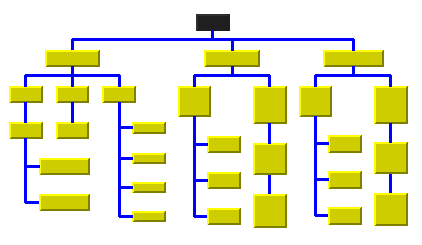
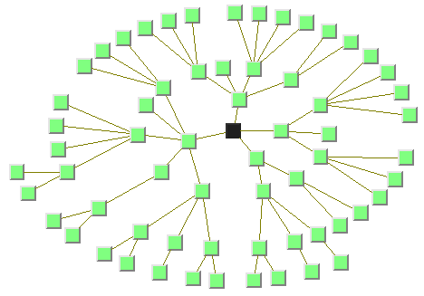

The following sample drawings are produced with the Tree
Layout.

Tree layout in free layout mode with center alignment
and flow direction to the right

Tree layout with flow direction to the bottom, orthogonal
link style, and tip-over alignment at some leaf nodes

Tree layout in radial layout mode with aspect ratio
1.5
What types of graphs suit the TL?
Primarily designed for pure trees. It
can also be used for non-trees, that is, for cyclic graphs. In this
case, the algorithm computes and uses a spanning tree of the graph,
ignoring all links that do not belong to the spanning tree.
Directed and undirected trees. If the
links are directed, the algorithm automatically chooses the canonical
root node. If the links are undirected, you can choose a root node.
connected graphs and disconnected graphs. If the graph is not connected, the layout
algorithm treats each connected component separately. Each component
has exactly one root node. In this case, a forest of trees is laid
out.